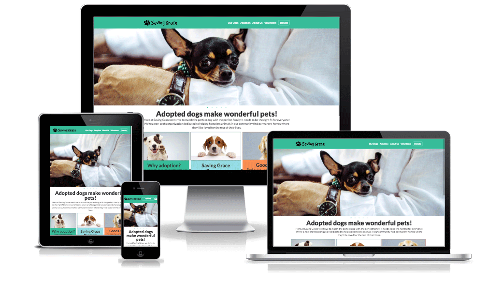

Saving Grace
Live Site | View CodeAt The Iron Yard we were given a group project to redesign a nonprofit site of our choosing. We all loved dogs and selected a dog shelter site to redesign. We had less then a week from the time we were given the prompt till presentation. Because of this short time crunch, I've since gone back and updated the site. Below I explain what I've carried over from my group and what I've modified.
Technology Used
• AJAX • Git Collaboration • HTML • jQuery • Photoshop • SASS • Sketch
About This Project
Saving Grace is a local non profit and dog shelter in North Carolina. Their mission is to complete families by matching them with the perfect dog. Since Saving Grace is a non profit that mostly runs on donations and volunteers. Their site appeared to have been built in the early 2000's and was in need of a redesign. My two team members and I decided this was the perfect challenge.
Weaknesses
- Navigation is on the side
- Pages can be too condensed
- Unnecessary links
- Distracting use of color pink
- Dog image sizes are inconsistant
Opportunities
- Call to action to donate
- Move navigation to the top
- Redesign logo
- Use modules and drop down menus to condense information
With this being the first group project at The Iron Yard it challenged us to really communicate on our design process. We started the project by laying out our brand styles, which included a bright color palatte that kept the playful feel of the site but was more professional then an overload of pink. We decided on the typeface, logo, and spent hours sketching on white boards to make sure everyone was on the same page before we dove into the code. My responsibilities were the navigation (header and footer) along with the Volunteer and Adoption pages. Since the project has ended I've gone back and made changes that we weren't able to impliment on a short deadline. I've redone the home page making it more responsive and updated the padding and margins on the About Us and Our Dogs page.
Goal of Redesign
We wanted to acheive three things; have a bigger call to action in donating; present the dogs in a cleaner way; and, condense the amount of content.
Challenges/Problems Solved
As is refelected in the sketches below, the original home page had the adoption, about the program and good dog section on a row. Then the spotlight, sign up form and a matchmaker feature, were flushed full width of the screen. When redesigning the page I wanted to condense the space even more, so I combined these sections into a row. The matchmaker was a neat feature that, when properly implimented, would be a quiz resulting in matching the person/family with a dog. We had run out of time to write the jQuery to make this functional.
Another challenge I faced in my redesign was designing the page to fit the content. Originally I thought I could lay out the adoption and volunteer page the same way as the home page was, with multiple columns on each row. However, after adding content I found that making the information flush looked a lot cleaner. Going back after the project I also added a max-width to each page. This prevented the content from spreading to wide.